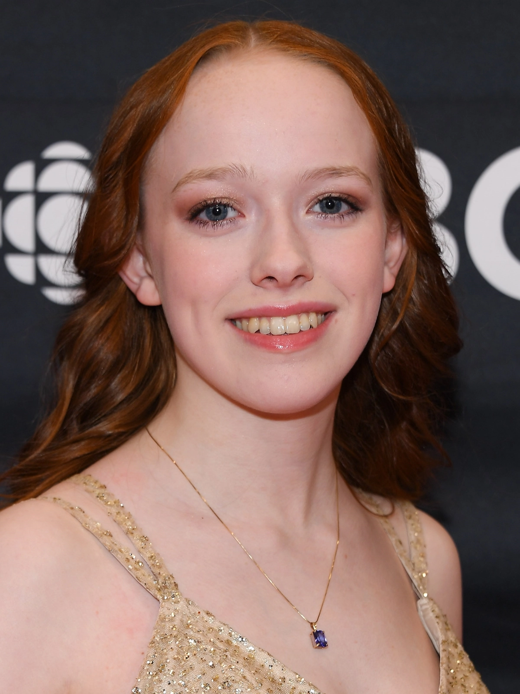
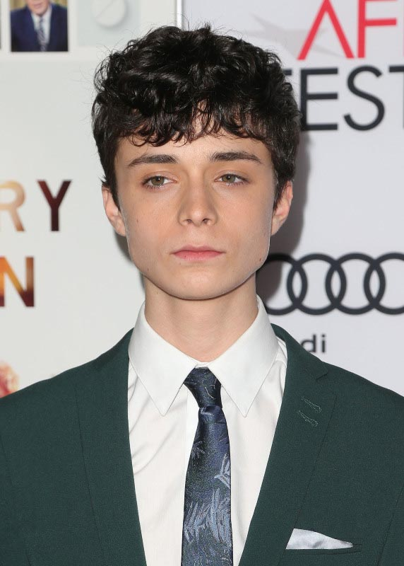
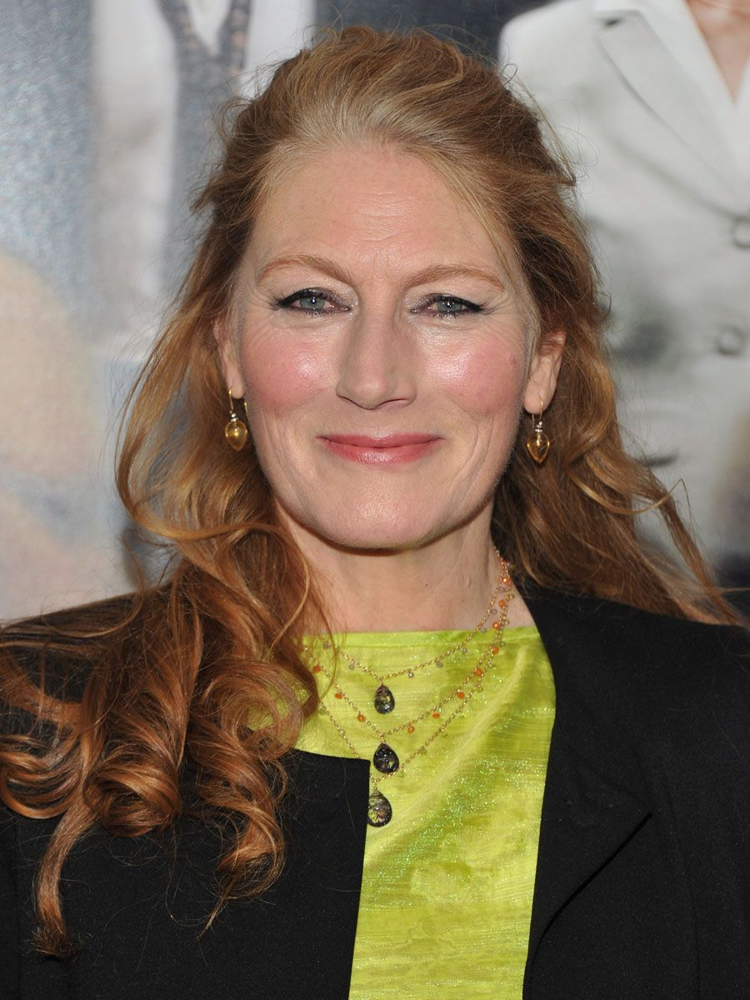
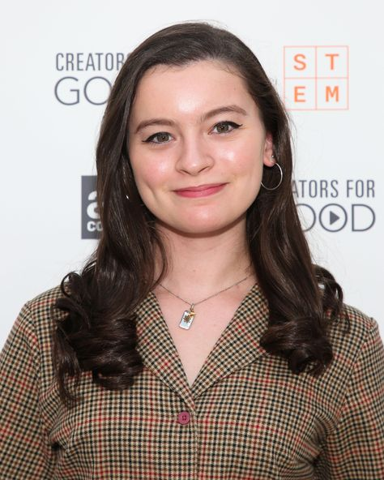

Amybeth McNulty é uma atriz irlando-canadense, que ganhou reconhecimento ao estrelar a série canadense Anne with an "E".
Nascida em 7 de novembro de 2001, Letterkenny, Irlanda

Lucas Jade Zumann é um ator norte-americano. Ele é conhecido por interpretar Milo no filme de terror A Entidade 2.
Nascido em 12 de dezembro de 2000, Chicago, Illinois, EUA

Geraldine James, é uma atriz de cinema e televisão inglesa.
Nascida em 6 de julho de 1950, Maidenhead, Reino Unido

Dalila Bela Caballero é uma atriz canadense que é conhecida por seu papel como Agente Olive na série Odd Squad da TVOKids/PBS, nos filmes de Diary of a Wimpy Kid, e por trabalhar em programas de televisão como Once Upon a Time e Anne with an E.
Nascida em 5 de outubro de 2001, Montreal, Canadá

Robert Holmes Thomson é um ator canadense de televisão, cinema e teatro.
Com uma carreira de cinco décadas, ele continua sendo uma presença regular nas telas de cinema e televisão canadenses.
Nascido em 24 de setembro de 1947, Richmond Hill, Canadá